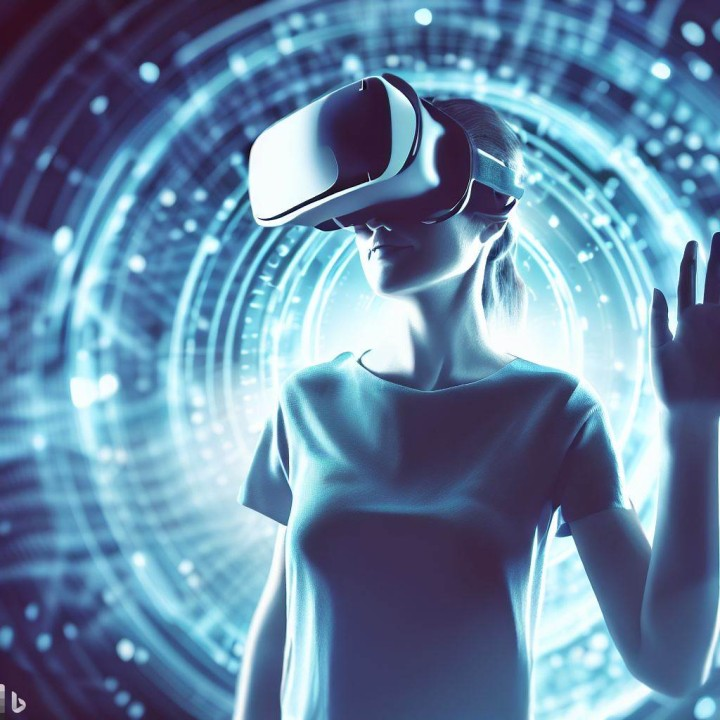

A incorporação da inteligência artificial (IA) no setor da saúde representa uma revolução nos processos
diagnósticos, tratamentos e pesquisas médicas. Sistemas avançados de IA têm a capacidade extraordinária de
analisar vastos conjuntos de dados clínicos, acelerando consideravelmente os diagnósticos médicos.
Além disso, a IA proporciona insights valiosos para o desenvolvimento de tratamentos mais personalizados e
eficazes. A utilização de algoritmos avançados contribui para uma abordagem mais precisa e rápida na
identificação de padrões, resultando em intervenções médicas mais assertivas.
Autor: Casa do Desenvolvedor | Data: 12/12/2023

Realidade Aumentada e Realidade Virtual (AR/VR)
A princípio a convergência entre Realidade Aumentada (AR) e Realidade Virtual (VR) está redefinindo a forma
como experimentamos o mundo digital e físico. Na saúde, por exemplo, a AR está revolucionando diagnósticos e
tratamentos, proporcionando aos profissionais médicos uma visão aprimorada de dados e imagens médicas em
tempo real durante procedimentos cirúrgicos complexos.
Por outro lado, a VR está sendo adotada em treinamentos corporativos, criando ambientes simulados que
possibilitam aos funcionários aprimorar habilidades de maneira imersiva e segura.
Além disso, no campo do entretenimento, a AR e a VR estão criando experiências que transcendem as fronteiras
do imaginável. Outrossim, desde jogos imersivos até eventos virtuais, essas tecnologias oferecem uma imersão
sem precedentes, aproximando os usuários de ambientes totalmente novos. Por outro lado, a educação também se
beneficia, com aplicativos de AR que proporcionam aprendizado prático e visualização de conceitos complexos.
Autor: Casa do Desenvolvedor | Data: 12/12/2023
Computação Quântica
A computação quântica, com sua capacidade exponencial de resolução de problemas, está redefinindo o cenário
tecnológico. Assim, ao contrário dos computadores convencionais, que operam com bits tradicionais, os qubits
na computação quântica exploram a superposição e o emaranhamento quântico, permitindo processamento em
múltiplos estados simultâneos.
Contudo, essa inovação tem implicações cruciais, especialmente na área de criptografia, onde algoritmos
quânticos desafiam as práticas tradicionais de segurança. Além disso, destaca-se na simulação de sistemas
complexos e otimização de processos, impactando setores como pesquisa farmacêutica e logística. À medida que
a computação quântica avança, suas aplicações práticas prometem transformar desafios antes considerados
intratáveis em oportunidades palpáveis.
Autor: Casa do Desenvolvedor | Data: 12/12/2023
Cibersegurança Avançada
A integração de Inteligência Artificial (IA) e aprendizado de máquina emerge como uma resposta proativa e
eficaz diante das crescentes sofisticações dos ataques virtuais.
A cibersegurança avançada, ao combinar a expertise humana com o poder computacional dessas ferramentas,
oferece uma defesa abrangente e adaptativa contra as ameaças digitais em constante evolução. Todavia,
investir em soluções que utilizam tecnologias avançadas torna-se fundamental para proteger dados sensíveis e
manter a integridade das operações digitais.
.png)